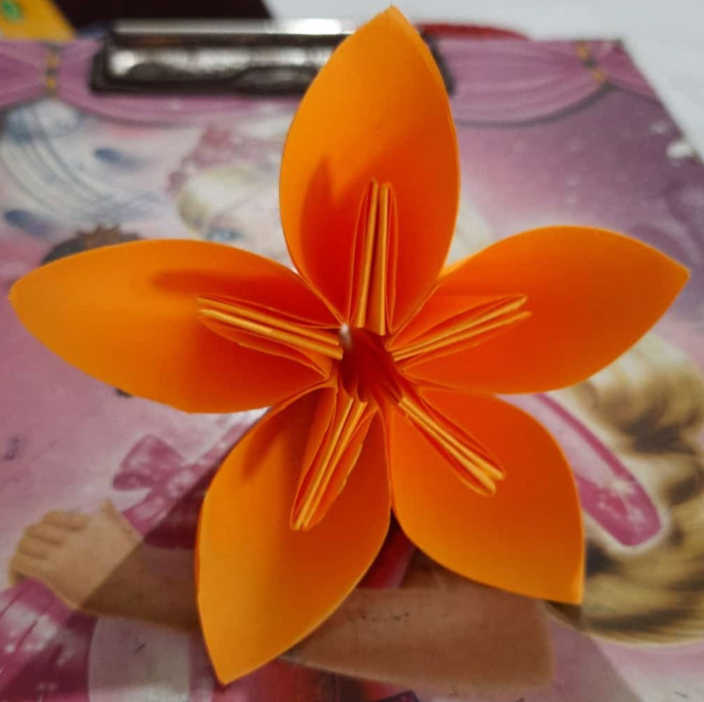
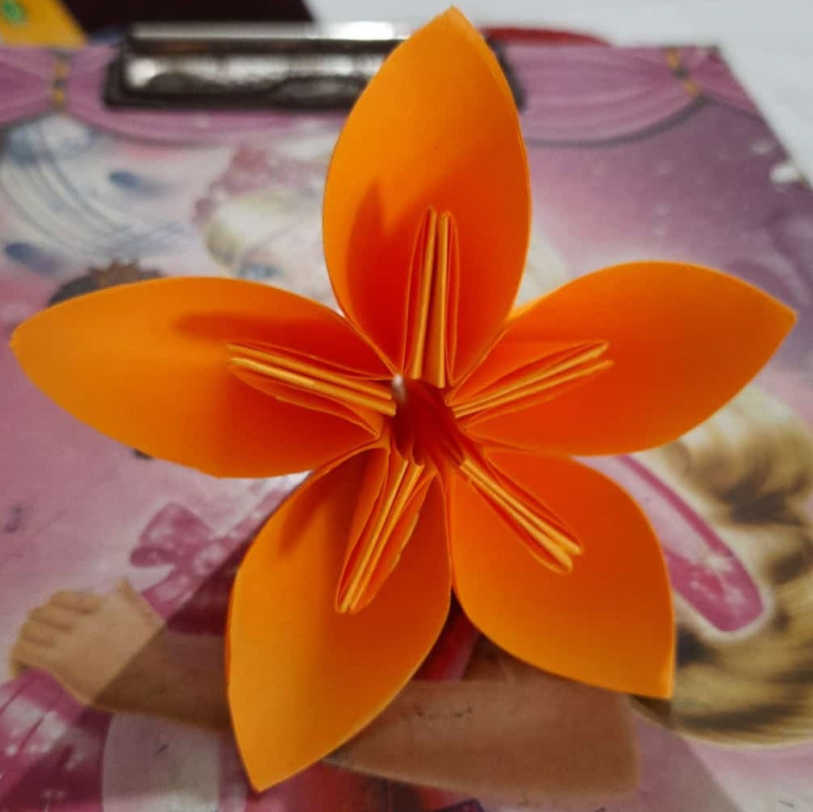
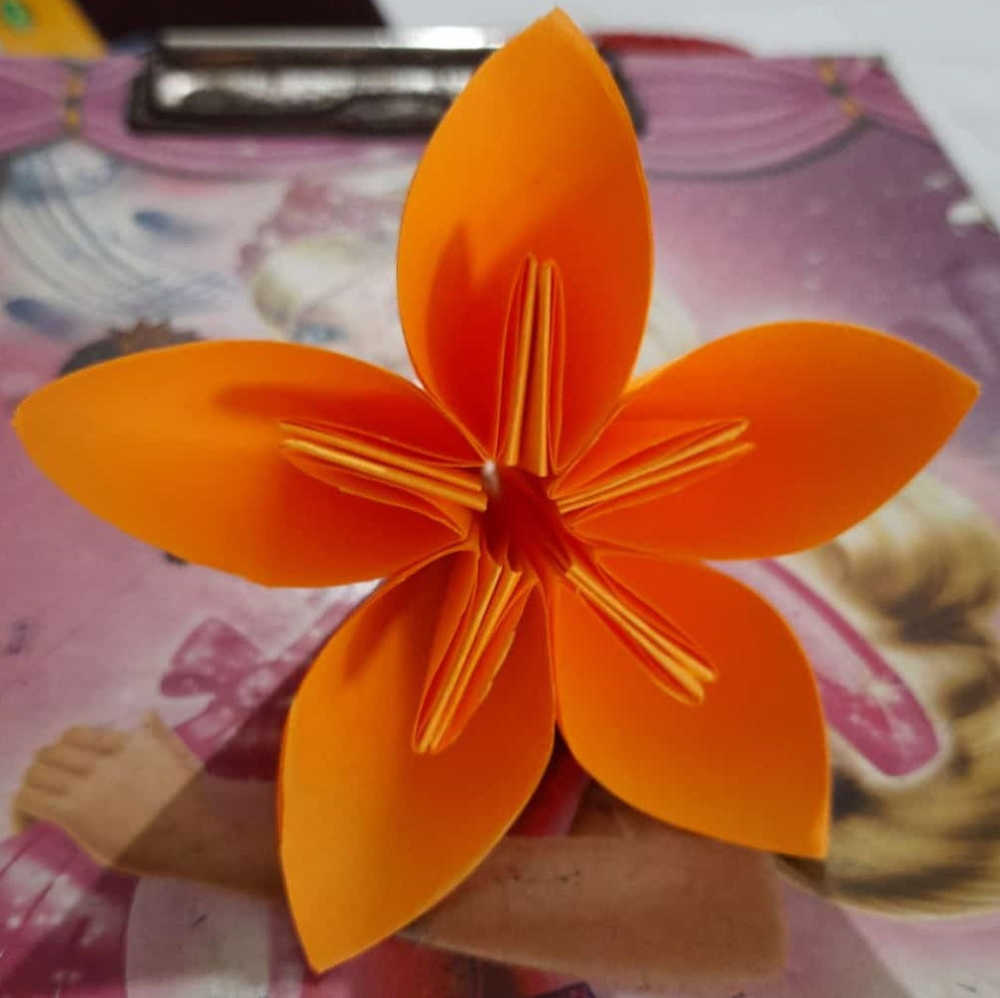
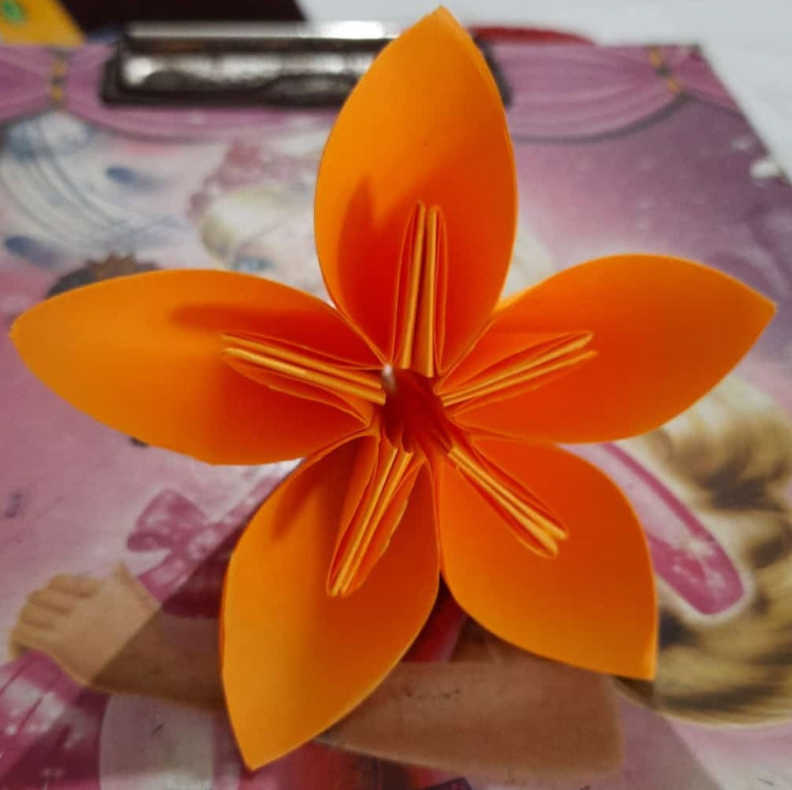

I am Avani. I am in 5th standard. I am 10 years old. I live in Dapoli. My school name is Saraswati Vidyamandir.
I like to play Barbie Set,Cooking, Badminton, Cards, Painting, Puzzles and Paper craft also. But my fevourite hobby is paper craft. I made different types of Paper Flowers, House, Fan, Boat, Greeting cards, Pen stand, Purse, Box, Enevelopes and Bags. I use variety colour papers for my craft. I give 2 hours for my hobby. My hobby makes me fresh and happy.